Pictured 1.0 walkthrough. Gates still open.
Doc 54 required T1–T6 green and grade S before this document. They are not. This is the peer-review record of what the live cockpit actually does, with pictures from this machine, and an honest list of what still blocks ship.
Verdict
Live T2I works. That is not S. Owner 2026-09-09 evening: every page × every family needs dest stills/video. T1–T6 plus the holes below are 1.0. Do not ship.
| Gate | State | Evidence |
|---|---|---|
| Grade S | OPEN | T2I, I2I, Wan T2V, Wan I2V-following, LTX T2V, Character, Comic, Concept, Dataset dests pictured. Owner: every page × every family, or S is impossible. T1–T6 still not green. |
| T1 Train | PARKED 1.1 | External Sohya launcher hidden from v1 rail (`kV1HiddenModes`). In-app trainer is 1.1. `SPELLVISION_SHOW_ALL_MODES=1` still shows it. |
| T2 Drop | PARTIAL | 2026-09-17, W4: dropped on the title bar, the rail and Flows; routed to T2I / I2I by classification; cockpit populated from the graph; dest generated from a dropped workflow; Download dialog and the v2v refusal photographed; safe_to_submit plant-and-revert proven live. 5 of 90 owner workflows drop-tested, no video, and a first import with missing node packs still times out at 120 s. See T2. |
| T3 Models | PARTIAL | 2026-09-17, W5: eleven kind tabs with counts; a LoRA identified live by hash showing its site name, quantisation chip, six fetched pictures and trigger words; a user picture surviving a real refresh; Refresh metadata with progress and cancel. Only 14 of 759 identified (a full pass is ~79 min, started for the shot and cancelled). No download or URL drop pictured. Not Stage-2 LoRA Manager. |
| T4 Opts | PARTIAL | 2026-09-17: measured, Doc 60. The old ~3% sage claim is WITHDRAWN — the archive held an unrecorded third arm at 159.27s, and the first arm of a session runs 7-8% slow after its cold render is discarded. Corrected: sage −0.3% on krea2 images, −10.2% on LTX video; DynamicVRAM off makes LTX 22× slower. Two families measured, not all; wan and hunyuan untimed. |
| T5 Defaults | PARTIAL | 2026-09-16, W2: a model's OWN published settings are the default. krea2 house checkpoint lands 10 steps / cfg 1.0 where the family table said 52 / 3.5, in Simple and Advanced, captioned “from this model's CivitAI examples · 10 of 10 agree”; dest 67.47s against 179.9s. One page, one family. clip_skip and guidance are resolved and discarded (no widget). Full family×page matrix not proven. |
| T6 Dual-PC | PARTIAL | 2026-09-17, W6: gate PASSED — SDXL rendered on the SpellNode 3090 Ti in 80.3s, dest fetched over /view; capability check cleared a present model and refused an absent one by name. ComfyUI-Distributed dropped (it silently falls back to the master when the worker is offline); native routing instead, no pack on either box. SDXL gated only — every other family needs its own gate render there. VRAM still does not pool. |
| T7 Walkthrough | THIS FILE | Pictures exist. Ship claim is forbidden until the rows above are green. |
Owner T7 holes — now 1.0
Read of this walkthrough, 2026-09-09 evening. Locked in Doc 54. None of these are green.
v1.0 remaining, in order (1.1 parked: in-app trainer, LoRA Manager, Pro Grade 313-node run, named verbs, Character B, installer):
Rebuild exe so Train is off the rail and Character sizes match the combo.Done 2026-09-12 Debug rebuild.- T2: photograph canvas drop → missing-deps dialog (import already works).
- fluxmania: cockpit Generate refuse dialog (worker already fail-closes).
Batch N: picture N dest files, not one overwrite.Done 2026-09-13 — 3 sibling dests_b01_b02.- T2I+still: picture an Edit (I2I) dest that uses the still.
- T4: Wan (and LTX) sage vs unopt timing.
- T5: live Simple=OP for remaining families × pages.
- Grade S: dest still/video per remaining page × family.
- S evidence: every page × every family, dest still or video in this file. T2I/I2I/Wan T2V/Wan I2V-following/LTX T2V/Character/Comic/Concept/Dataset pictured. T1–T6 still open.
- T4: krea2 T2I cold A/B pictured (sage 120.72s / SDPA 124.01s). Wan unopt still open.
- Dataset: Simple hides seed/canvas; T2I stack still merged. Not a full backend-free product.
- T2: live-drop owner’s real workflows.
- T5: Simple restore + toggle re-apply family OP. Full family×page matrix not live-proven.
- T1: family + last Dataset folder + hardware rank/batch. Still a launcher, not an in-app trainer.
- T3: drop local weight or URL. Display name is sidecar. Not Stage-2 LoRA Manager.
- T6: Dual-PC / dual-GPU checkboxes that disclose a node download. Share mounted only with consent. Path in Settings.
- Comic: quoted script lines fill dialogue; canvas and export draw balloons. Not a live dest of a lettered page this wave.
2026-09-12 session — live UI, not dests
Rebuilt SpellVision.exe 21:54, pid 51216. Worker :8765 up. Comfy :8188 came online later this evening. No new Generate dest this wave. These shots are page proof. T7 stays Do not ship.
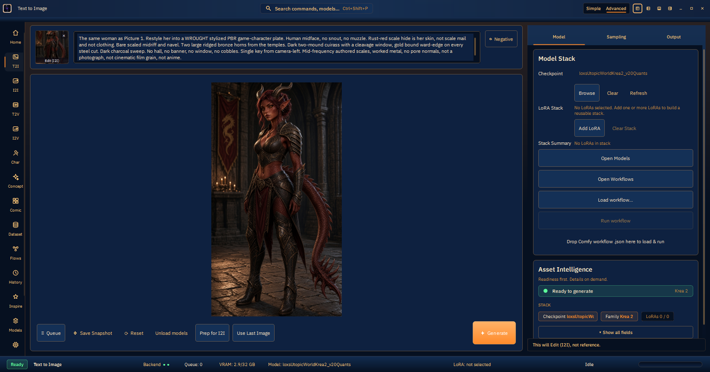
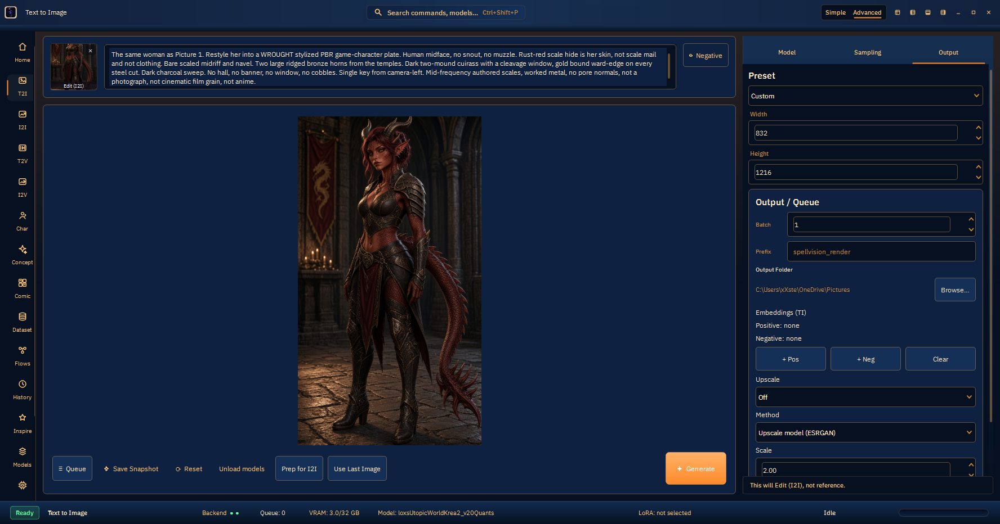
_b01 are worker-side (0e64248); N dests not generated.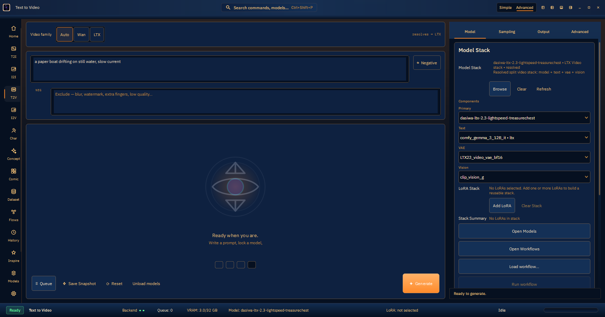
b9731e3). Model Stack still lists a Vision component clip_vision_g — that is the catalog slot, not the unread launch field. Native graph still does not read ltx_vision_encoder_name.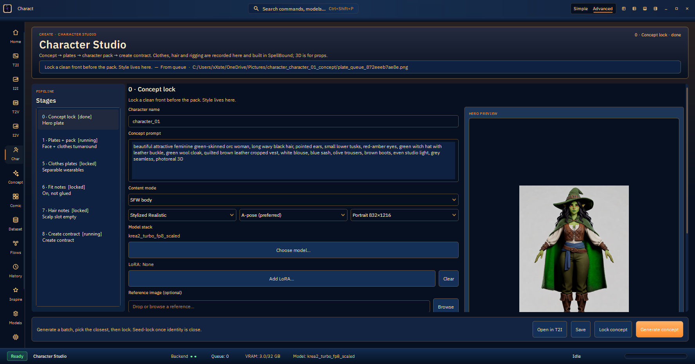
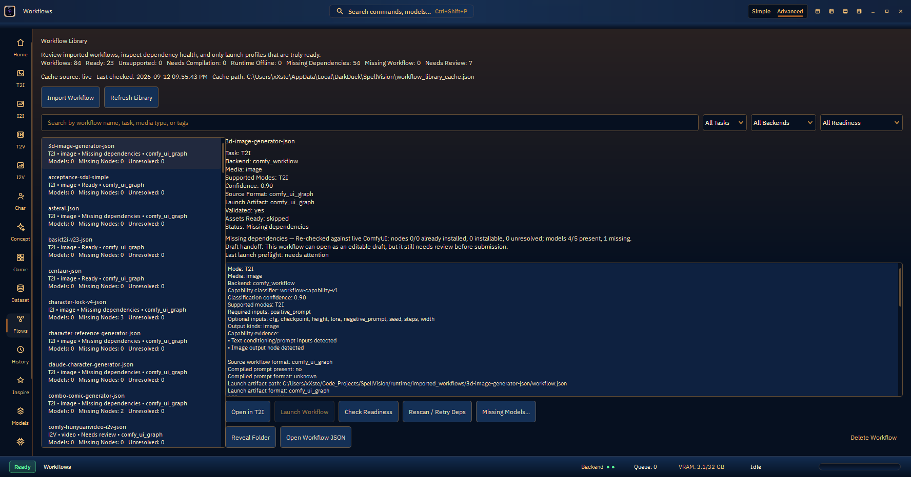
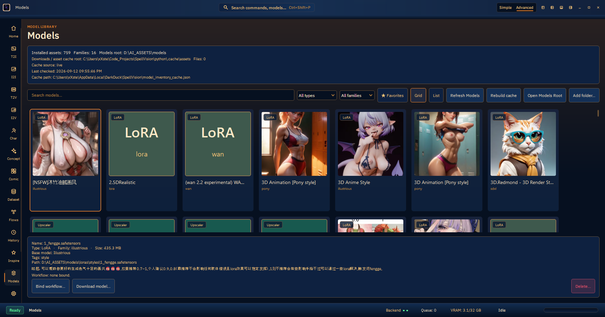
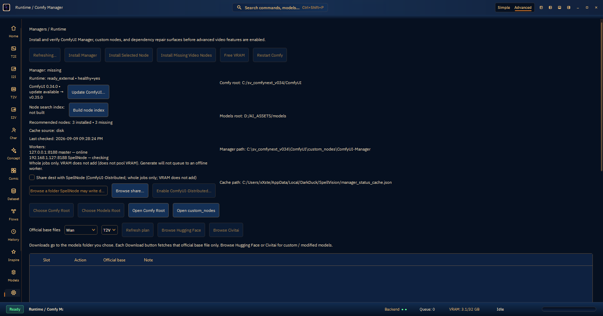
- look_complete knobs
d87df4e— in-process 832×1472 / 28 / cfg 5.0. Character UI does not expose them. - T2I+still aliases
6fc1bf6— cockpit chip pictured.source_imageremap in-process. - Batch N dests
0e64248— spinner pictured at 1. N dests not generated. - fluxmania fail-close
ba00073— live enqueuequeue_6deded4b032cfailed: quantized DIFFUSERS transformer, CheckpointLoaderSimple cannot load. UI refuse dialog not pictured (queue poll, not cockpit Generate). - T1 Train — pictured. External launcher. Cluster fail-closed.
plate_queue_c997e53dc295.png · krea2 native · 52 steps · 179.9s · cache_hit false. Horned scaled bust. One dest, not every family.Grade S — live cockpit
The product promise is intent in, stills/clips out, without a node graph. T2I, I2I, Wan T2V dests exist. Wan I2V with i2v experts follows the keyframe. LTX T2V dest exists (Gemma combo name + video VAE). Character concept dest exists (krea2 turbo + qwen3vl). Comic panel dest exists. Concept reference dest exists. Dataset dest exists (krea2 52-step, golden-hour landscape). That is not a ship certificate — T1–T6 are not green.


plate_queue_37261cc92275.png but experts were wan2.2_t2v_* not wan2.2_i2v_*. Frame-0 MAE 79.13 vs proven i2v ~5.19. Prompt-only photoreal woman. Fail-closed in worker native_video_graphs.py after this find.wan2.2_i2v_* + umt5. Frame-0 is the goblin witch, center-crop MAE 9.25 (prior t2v-on-i2v was 79.13). 379.61s.comfy_gemma_3_12B_it.safetensors (combo name, not a D: path) + ltx\LTX23_video_vae_bf16 (not audio). 832×480 · 81f @ 16 fps · 73.31s. Graph 400 from absolute Gemma path is closed (1acdcf8). Frame 0 is two people in floodwater, not the paper-boat prompt — dest exists; prompt-adherence is not S evidence.
qwen3vl_4b_fp8_scaled + qwen_image_vae · 896×1152 · 82.21s. First Generate after LTX hung 10 min on UNETLoader; next failed missing unet_raw, text_encoder because extra_model_paths.yaml was D:-only while the UNET lives on F:. Closed 03321ff. Green orc witch, A-pose, matches the concept prompt.
481f6f7. Sample script was placeholder-only so Split/Generate no-op'd until a real beat was typed. Dest exists; rain/neon comic still, not a clean alley establishing shot.

ee8c66f. Four jobs queued; first dest is a golden-hour lake, prompt-adherent. Writes under dest/images/, not a named project folder.- This T2I run: Busy/Running, Generating… on canvas and Asset Intelligence, then Completed / Queue 0.
- I2I source preview retries async pixmap load (
1c29236). Live I2I dest is pictured. - Wan T2V generate-proven. Wan I2V with i2v experts follows the keyframe (
50120b0). LTX T2V dest pictured (f8a222funblocked Generate; graph Gemma combo + video VAE). Character concept dest pictured (03321ffF: extra yaml). Comic panel dest pictured (481f6f7picker extra roots). Concept dest pictured. Dataset dest pictured (ee8c66freal prompt + 1024 canvas).
T4 — optimizations, generate-proven
CORRECTED 2026-09-17 — the sage-vs-SDPA figures below are withdrawn.
The full measurement is Doc 60. Two things the
numbers below could not know: runtime/state/job_archive.json holds a
third arm at 159.27 s that this section never mentions, so the published
gap was smaller than the spread between two runs of the same arm; and the first
arm measured in a session runs 7-8% slow even after its cold render is
discarded, which is more than twice the effect being claimed.
On a warm baseline SageAttention is worth −0.3% on krea2 images (nothing)
and −10.2% on LTX video. The largest finding in the matrix is not an
optimization at all: LTX with DynamicVRAM disabled is 22× slower
(895.96 s against 40.11 s).
Sage was installed but not in argv on the adopted Comfy. Restarted with --use-sage-attention. krea2 T2I completed. Dest landed. Cold A/B on the same job (prompt golden-hour landscape, seed 7, 1024×1024, 52/3.5, krea2 utopic v20, Comfy restarted between arms): sage 120.72s vs SDPA 124.01s. Sage is ~3% on this image job — not the Wan −25% figure. Do not quote 25% for T2I.


| Family × opt | Used / skipped / broke |
|---|---|
| krea2 T2I × sage | used — dest 120.72s cold |
| krea2 T2I × SDPA | used — dest 124.01s cold (~3% slower than sage) |
| krea2 T2I × comfy-aimdo 0.4.15 | installed; DynamicVRAM filled ~21 GB |
| Wan × sage | not generate-proven this wave vs unopt |
| LTX × sage | used — dest landed 73.31s · not timed vs unopt |
| xformers | absent in live Comfy venv |
T2 — workflow drop
The owner's ask was one sentence: “T2 should allow dropping a workflow into the window, load it, then auto-populate it on the correct page.” Before W4 none of those three verbs happened. A .json dropped anywhere but a cockpit found no drop target and vanished in silence; one dropped on a cockpit stayed on whatever page the mouse was over; and the draft it produced carried file paths and a warning, with safe_to_submit hard-coded false. W4 landed the window-level drop target, one mode resolver, the draft builder, the coordinator that chains import → classify → compile → draft, and the launch-readiness verdict on the import reply.
This pass drove the built SpellVision.exe through real OLE drag-and-drop (scripts/dev/uia/svdrop.ps1 — a real drag-source window, a real button press, DoDragDrop, and the cursor walked onto the target), against the live worker on :8765 and ComfyUI v0.34.0 on :8188. Every picture below is the window, at 1:1, on this machine, 2026-09-17.
Dropped where there is no cockpit
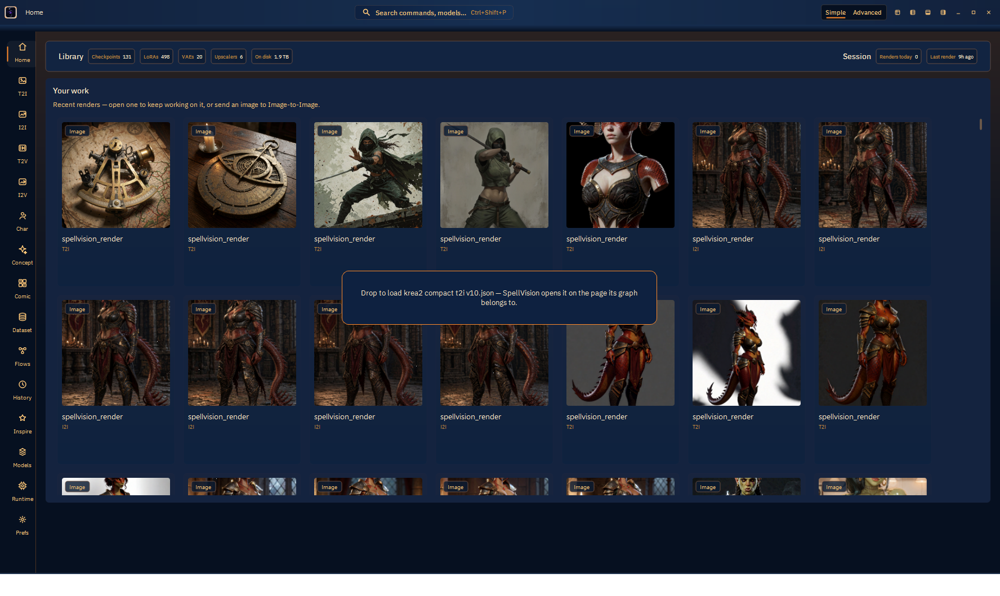
krea2 compact t2i v10.json. “Drop to load … — SpellVision opens it on the page its graph belongs to.” Captured DURING the drag; the overlay does not exist a frame later.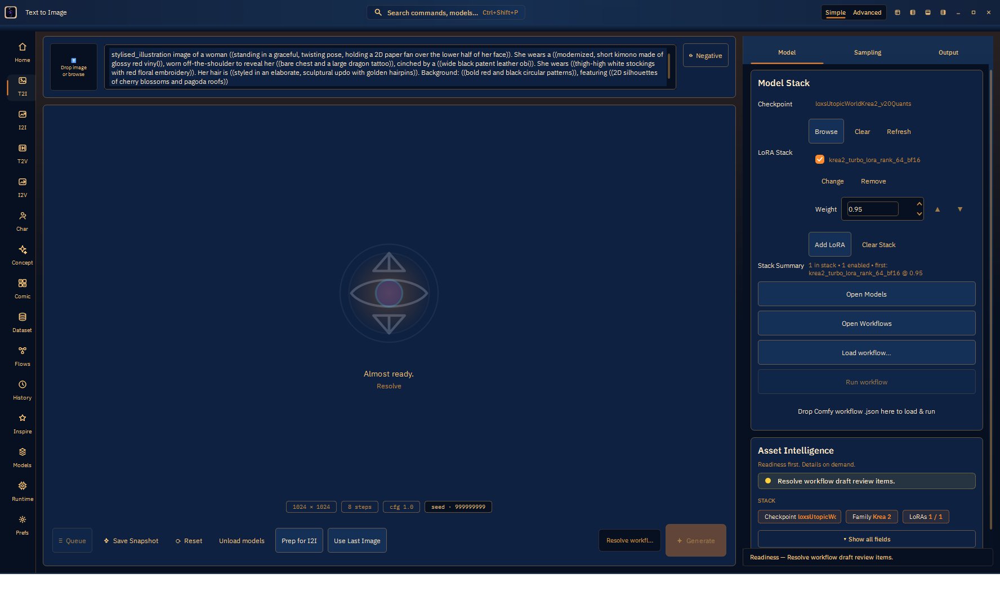
loxsUtopicWorldKrea2_v20Quants, LoRA krea2_turbo_lora_rank_64_bf16 @ 0.95, 1024×1024, 8 steps, cfg 1.0, seed 999999999 — all out of the owner's graph. Generate is closed: readiness found 3 of its 4 models absent.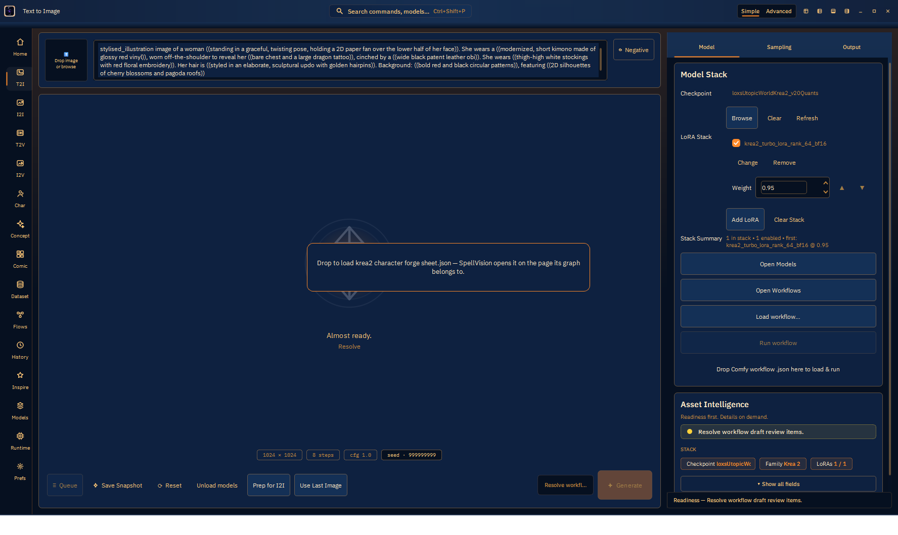
krea2 character forge sheet.json.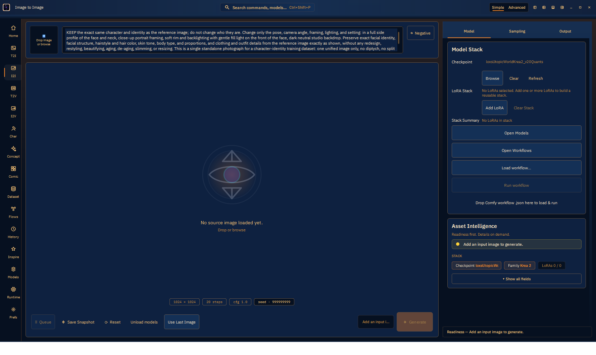
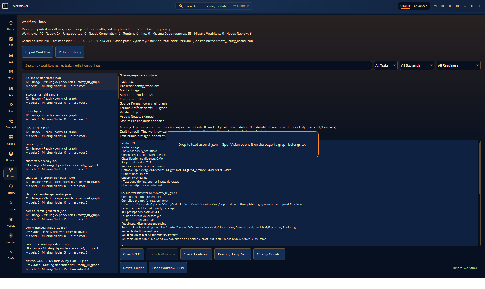
asteral.json. 90 workflows, 24 Ready.A ready workflow, and a dest
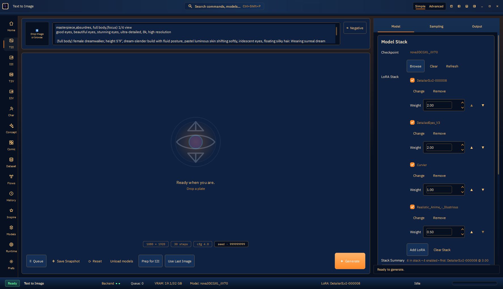
nova3DCGXL_ilV70, four LoRAs with their weights (2.00 / 2.00 / 1.00 / 0.50), 1080×1920, 30 steps, cfg 4.0. Readiness said 5/5 models present, so Generate is open and the strip reads “Ready to generate.” This is the state that did not exist before W4.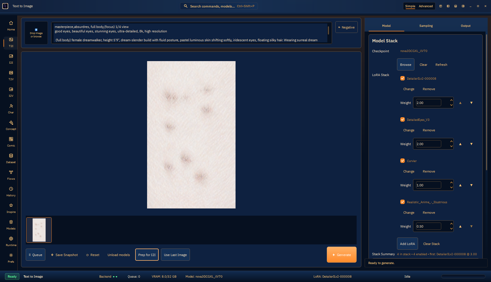
When it needs something, and when it refuses
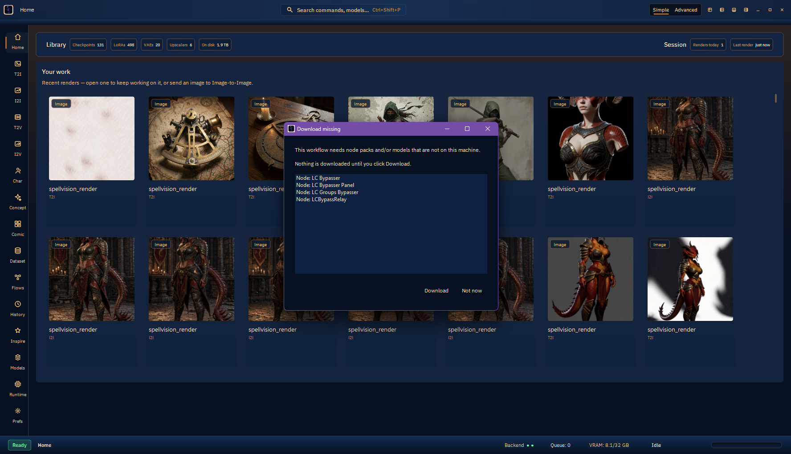
krea2 pro grade v17.json (313 nodes) · “Nothing is downloaded until you click Download.” · the four LC Bypasser classes this machine does not have. First photograph of this dialog from a real drop — Doc 55 has said “canvas drop dialog not photographed” since 2026-09-12.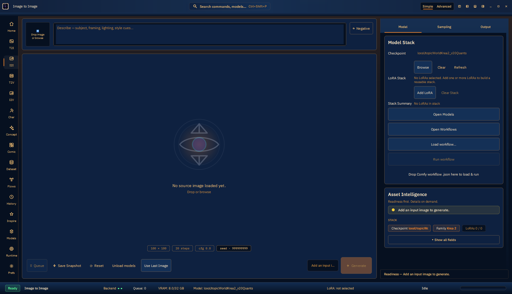
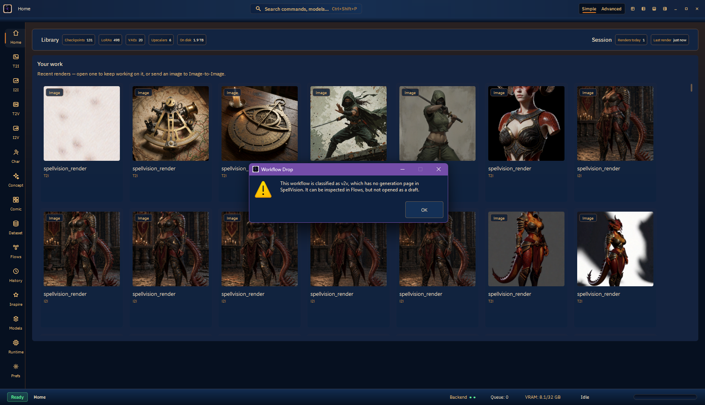
rife interp.json dropped on the rail. “This workflow is classified as v2v, which has no generation page in SpellVision. It can be inspected in Flows, but not opened as a draft.” The old Home resolver would have matched the filename and put it on T2I.The plant: safe_to_submit is the worker's verdict, not a literal
Forced ready = False in _write_recheck_into_profile — the one function both the import reply and check_workflow_launch_readiness answer from — restarted the worker, and dropped the workflow that had been Ready twenty minutes earlier. Nothing else changed: same file, same machine, same build.
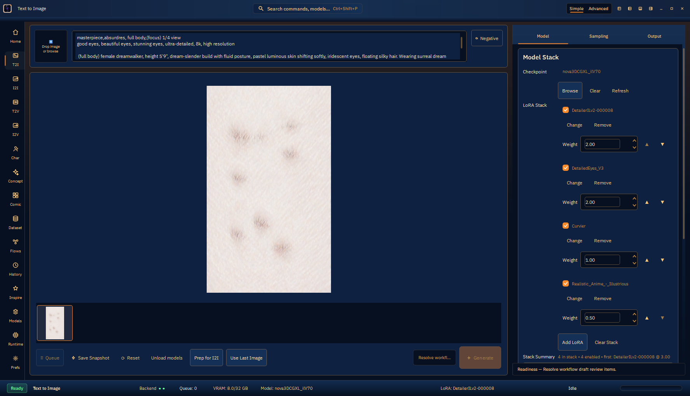
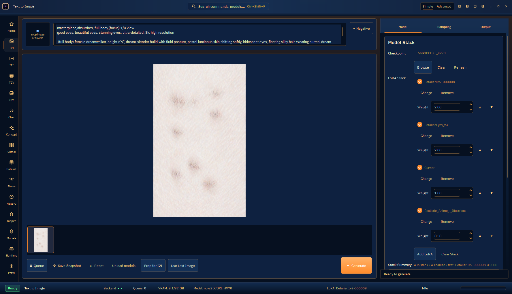
What this does NOT prove
T2 is not green. Five of the owner's ninety imported workflows were drop-tested:
krea2-compact-t2i-v10, krea2-character-forge-sheet, krea2-pro-grade-v17,
asteral-json and rife-interp-json (plus ltx-api-json as a second refusal).
The owner's bar is their real workflows drop-tested, and eighty-four of them have not been.
- A first-ever import of a workflow with missing node classes times out in the UI. The installed-node snapshot shells out to ComfyUI-Manager's
cm-cli, measured 128.0 s cold on this machine against a 120 s request timeout; the drop comes back as “the worker did not complete the import.” W4 cut two of the three calls (skipped when there is nothing to resolve, cached per ComfyUI — 0.00 s afterwards), so the second drop of the same workflow works — which is exactly how the Download dialog above was photographed. The first one still does not. Pictured:t2_drop_import_timeout.png. - The Download dialog cannot see a UI graph's missing models. It is driven by the import's own model plan, and a UI-graph export hides model names in positional
widgets_values, so that plan is empty. Readiness now compiles in memory and does see them (that is why krea2-compact's Generate is closed above) — but the user is told, not offered the download. Only an API-prompt graph reaches the model half of that dialog. - A file that is not a workflow at all is not recognised as one. A hand-written two-key JSON is treated as an API-prompt graph, goes through full dependency resolution, and comes back as the same 120 s timeout rather than “this is not a ComfyUI graph.” The refusal is honest but it names the wrong cause.
- Pro Grade v17's draft is a checkpoint and nothing else (above). The 313-node graph's prompt and sampler are not where the extractor looks.
- Video was not drop-tested. Every landing here is t2i or i2i. T2V/I2V routing is asserted in
tests/test_workflow_drop_contract.pyagainstwan-simple-t2v-jsonandwan-simple-i2v-json, not driven in the app. - UIA reports Generate as enabled while the app refuses the click. Under the plant,
IsEnabledwasTrueand the click queued nothing. A rig that asserted on that property rather than on the outcome would have read a working gate as broken, or a broken one as working.
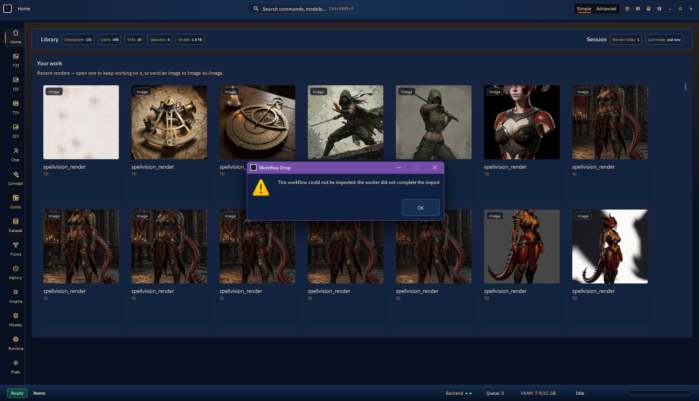
T5 — Simple = family OP
- Same-family checkpoint change reapplies the table (
380d8dd). - Hidden krea2 selector uses table sampler
er_sde(b9797e3). - Table krea2_image: 52 steps / CFG 3.5. Live Sampling tab showed 52 / 3.5.
- Open: full T2I/I2I/T2V/I2V × family matrix not live-proven. restoreSnapshot no longer writes last-chose steps in Simple.
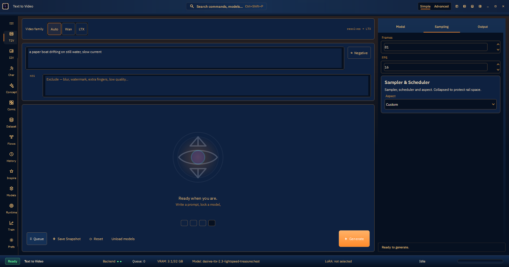
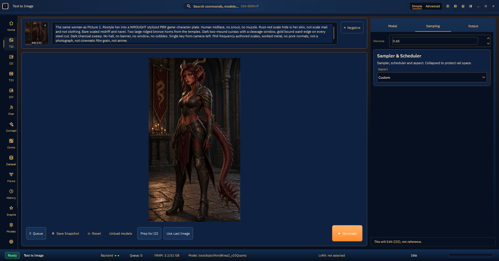
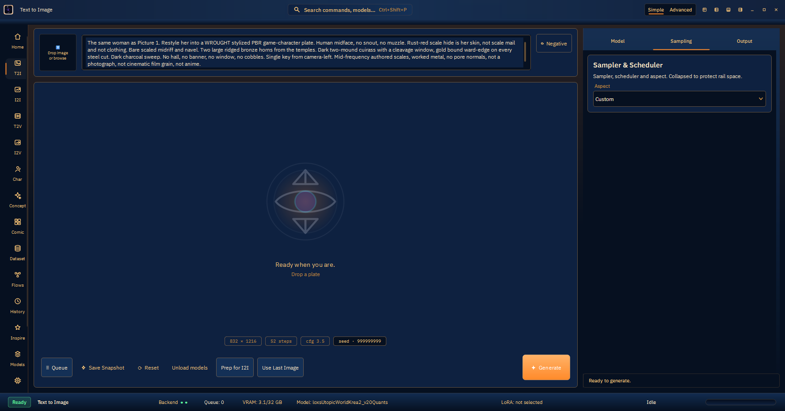
W2 — the model's OWN settings, not just its family's (2026-09-16)
Everything above this line is the family table. W2 changed what T5 means: a page now shows what this model's author publishes about this model, and says where the number came from. The family table is the floor under that, not the answer.
The case that motivated it is the owner's own house checkpoint.
loxsUtopicWorldKrea2_v20Quants ships 10 steps / CFG 1 / er_sde / simple
across 10 of 10 of its author's example images on CivitAI. The row above
records SpellVision rendering it at 52 / 3.5, because that is the family's
raw operating point and nothing read the model. A live library refresh
identified 34 of 35 weights on the F: root and every Lox variant on disk agreed on 10.
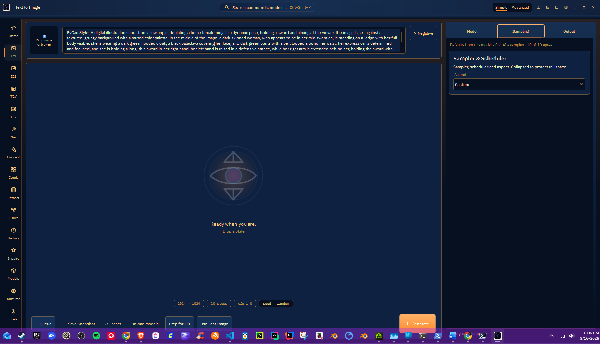
loxsUtopicWorldKrea2_v20Quants ·
canvas strip 1024 × 1024 | 10 steps | cfg 1.0 · caption
“Defaults from this model's CivitAI examples · 10 of 10 agree”.
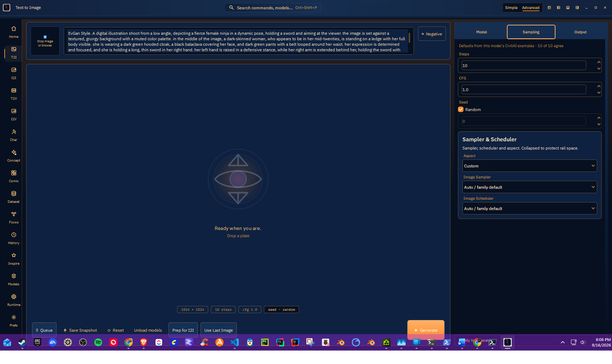
plate_queue_2c1824878970.png · sidecar records
steps 10 · cfg 1 · er_sde · simple · 1024×1024 · 67.47 s. The comparable
pictured krea2 dest above ran 52 steps in 179.9 s. Same model, same box:
2.7× faster, at the settings its author actually uses. The engraved
graduation marks resolve, so 10 steps is this checkpoint's operating point rather than a
degradation — which is the whole claim.
T5 is still OPEN and this does not close it. What is proven here is one page (T2I) and one family (krea2), plus the mechanism. The owner's bar is every page × every family. Also still open, and recorded rather than hidden:
clip_skipandguidanceare resolved by the worker and then discarded — no widget exists for either anywhere inqt_ui/. Carried to the Models/UI wave.- A user-chosen preset and a model's own defaults can both write steps and CFG, so which one the user sees depends on the order they touched them. Recorded, not resolved.
- Models with no CivitAI match (an HF-origin file, since HuggingFace has no by-hash endpoint) fall back to the family point and the caption says so.
Mechanism, for the record: the values come from model_recommended_settings, whose
precedence is user > the model's own example images > its card > the family operating
point > the family's published floor. The C++ that used to hold wan/ltx/flux3 sampling
numbers is deleted, and a ratchet (sampling-defaults-are-data) keeps them in data.
Deleting it found that the two copies had already drifted: the table said wan was CFG 4.0 on
euler while the C++ said 5.0 on uni_pc, so the cockpit had been showing a pair the render was
never going to use.
T6 — the second machine, gated for real (2026-09-17)
The row above records T6 as NOT GREEN with a Distributed pack that was never installed. That approach was dropped. SpellVision now routes whole jobs itself, with no ComfyUI extension on either machine — the reasoning is in Doc 61 §6 and the research it cites, and the short version is that ComfyUI-Distributed silently runs the job on the master when the worker is unreachable, which is the opposite of what this row asks for.
Capability check, live against 192.168.1.127:8188: a real SDXL graph
naming a checkpoint the node reports cleared all three checks (health → models → nodes). The same
graph naming no_such_model_xyz.safetensors was refused by name —
“http://192.168.1.127:8188 does not have no_such_model_xyz.safetensors” — and stopped after the
models check, because the checks run in cost order and there was already a reason.
sdxl/LuxuriousPrisma_v30 · 1024×1024 · 20 steps · CFG 7.0 ·
80.3 s · fetched back through GET /view, 2,002,262 bytes. The job was
submitted over HTTP and the result pulled back over HTTP; no disk path crossed the machines.
SDXL is gated on SpellNode. Nothing else is. The Families checklist for an endpoint starts empty and the app fills it from successes — you can untick a family, you cannot tick one that has never rendered there. Krea2, Flux and every video family need their own gate render on that machine. Ampere has no fp8 tensor cores, so an fp8 checkpoint loads and dequantises per layer: it works, it saves VRAM, it does not save time.
VRAM does not pool. 32 GB and 24 GB are two machines. Nothing in this design adds them, and the Runtime page says so.
T1 — Train
Partial. Pictured 2026-09-12: family combo Krea 2, dataset folder unset, trainer path unset, LoRA rank 16, batch 2, hardware 32 GB VRAM / 1 GPU, Launch trainer. Advanced reveals rank/batch in place. Still an external launcher — not an in-app trainer. Dual-PC recipes fail-closed until the cluster is joined. No house checkpoint. No house LoRA.
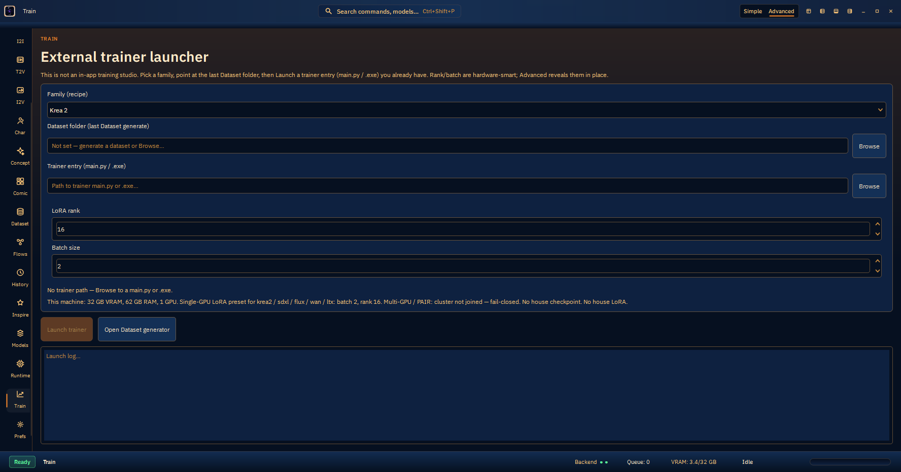
T3 — Models page
Partial. Library pictured 2026-09-12: 759 assets, 16 families, grid + Inspect + delete. Drop a local .safetensors (copied into the primary library, filename unchanged) or a Civitai/HF URL. Display name is sidecar model_name. Not Stage-2 LoRA Manager / Power-LoRA / PNGInfo round-trip.
W1 model-intelligence live proof, 2026-09-16: F:/AI_ASSETS/models reported readable, 35 weights examined, 34 identified by hash against Civitai, 1 no-match (sd3.5_medium — HF-origin; HF has no by-hash endpoint, exactly as predicted), 0 errors, 466s elapsed, 123 preview images fetched. Every Lox's Utopic World variant on disk (5 of them) resolves to the same render settings, read from the site's own example images rather than guessed at:
| Source | Steps | CFG | Sampler | Scheduler |
|---|---|---|---|---|
Site example images (site:image-meta-mode, n=10/10 on three of five variants) | 10 | 1 | er_sde | simple |
family_operating_points default point (raw), what SpellVision renders today | 52 | 3.5 | — | — |
W1 only stores this. The sidecar per weight now carries the site-published settings, but no generation page reads it yet — T2I/I2I still render every krea2 checkpoint at the family table's 52/3.5 regardless of which one is selected. Wiring a generation page to prefer a model's own sidecar over the family default is the next wave (W2), not this one.
W5 — the page becomes a library, and the refresh has a button (2026-09-17)
W1 stored the intelligence and no surface read it. W5 Tasks 1–3 gave the page tabs from the
classifier, cards that show what the site says, and an inspector. Tasks 4–6, below, add the
action that makes the rest usable: Refresh metadata, run from inside the app.
Everything in this block was driven through the built SpellVision.exe against the
real library on D:/AI_ASSETS/models, with the live CivitAI API and
no account and no API key. ComfyUI was not running for any of it.
The library, by kind
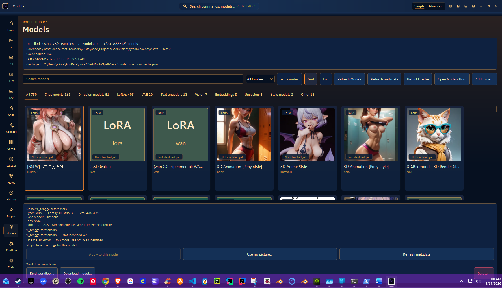
D:/AI_ASSETS/models ·
tabs All 759 · Checkpoints 131 · Diffusion models 51 · LoRAs 498 · VAE 20 ·
Text encoders 18 · Vision 7 · Embeddings 8 · Upscalers 6 · Style models 2 · Other 18.
The counts add to All, which is the conservation law the tabs are tested on: a model in no tab
is, from the user's chair, a model that is not installed. Most cards read
Not identified yet, and that is the honest state of this root — it holds no
sidecars at all, which is exactly the situation the button below exists for.
Refresh metadata, on one model, with no key
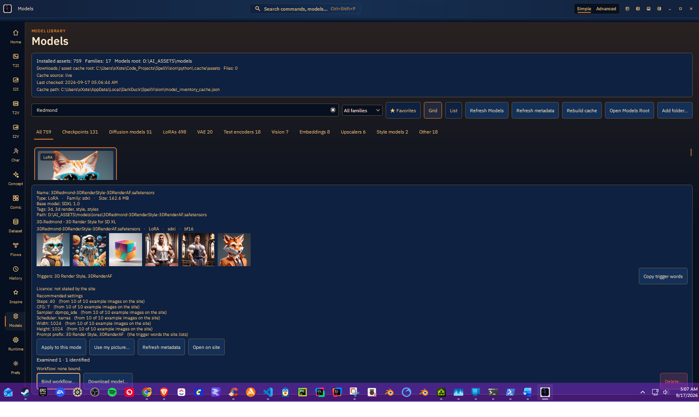
3DRedmond-3DRenderStyle-3DRenderAF.safetensors, a weight
that was Not identified yet a minute earlier. One click on the inspector's
Refresh metadata hashed that one file, asked CivitAI by hash and wrote the
sidecar: site name 3D.Redmond - 3D Render Style for SD XL, the quantisation
chip bf16, six example pictures fetched into
models/.spellvision/previews/, Triggers: 3D Render Style, 3DRenderAF,
Licence: not stated by the site, and the outcome line
Examined 1 · 1 identified. No credential was configured and none was asked for.
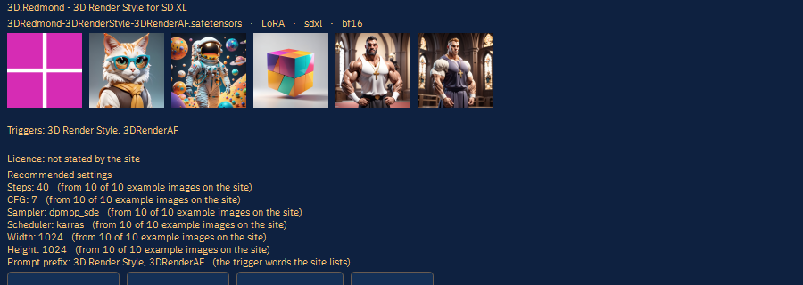
Steps: 40 (from 10 of 10 example images on the site) through to
Prompt prefix: 3D Render Style, 3DRenderAF (the trigger words the site lists).
A number with no source invites the user to trust the wrong one; this is the difference
between “the author renders it this way” and “our family table guessed”.
A picture of your own, across a refresh
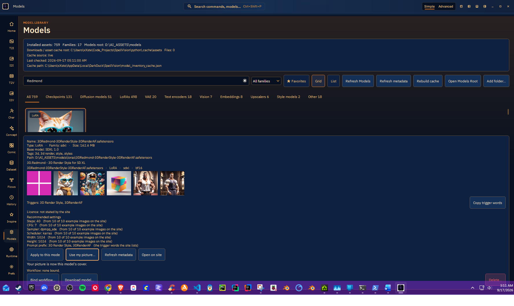
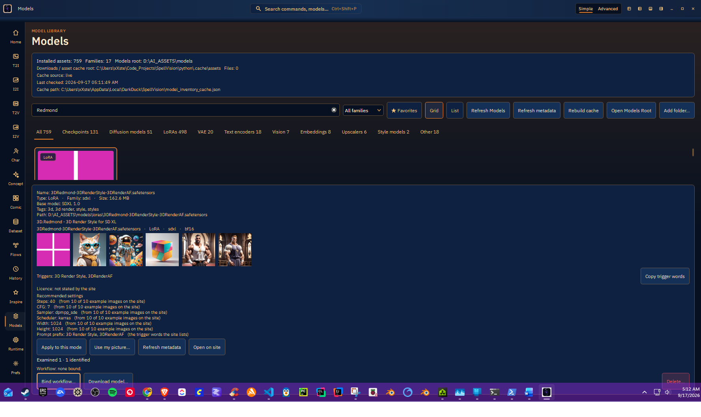
Examined 1 · 1 identified, site pictures
re-fetched). The card cover and the first gallery tile are still the user's plate. This is the
promise three docstrings made and nothing held until W5 Task 3, and it can fail in two
independent ways — the sidecar entry and the bytes on disk — so it is asserted at
both ends.
Read this before trusting a live check of this behaviour. The first live run of
exactly this sequence FAILED — the picture was replaced by the site's cover — and the
code was not the reason. The worker on :8765 had been started the previous evening,
hours before the fix landed, so it was serving the old sidecar.merge out of memory.
The same sequence run head-on against the modules on disk passed at once. Python is not compiled,
so a long-running worker is a stale binary in every sense that matters: restart it before you
measure it.
The whole library: background, progress, cancel
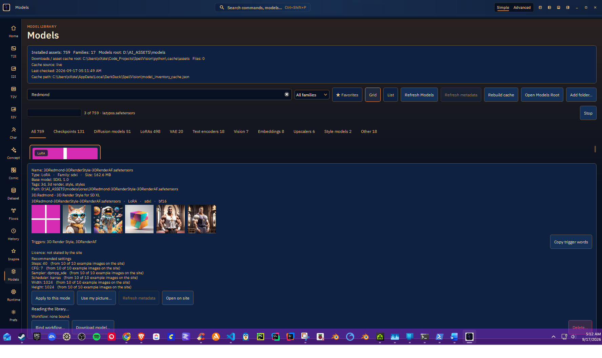
3 of 759 · lazypos.safetensors, a Stop button,
both refresh buttons disabled, inspector status Reading the library…. The request
carries "background": true, so the reply is the job id and the progress arrives over
subscribe — a foreground pass would hold the connection for the ~79 minutes
this library takes and be indistinguishable from a hung worker.
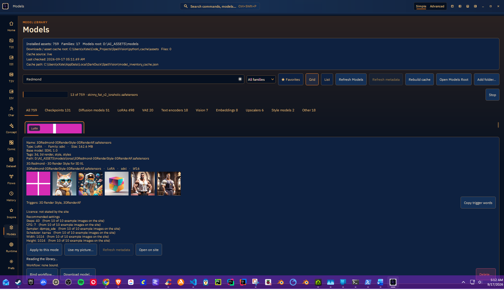
13 of 759 · skinny_fat_v2_loraholic.safetensors. Smallest
file first, by design, so the library fills in visibly instead of starting on a 6 GB checkpoint.
model_intel_cancel with the job id →
Stopped after 14 of 759 · 14 identified. A cancelled run still returns the
counts it reached rather than nothing, the progress row retires, and the user's picture is still
the cover. Cancel is addressed by job id, which only the started event carries, so the
button is not offered in the window before that id arrives — a cancel with no id cancels
every running refresh.
The sentence W2 had to delete
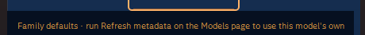
novaExanimeXL_ilV50) ·
“Family defaults · run Refresh metadata on the Models page to use this
model's own”. W2 wrote that sentence, could not make it true, and deleted it
(ruling W2-F1: “there is no such control and nothing in qt_ui/ starts a
model_intel_refresh at all”). It is restored here in the words the button
uses, and the button is two clicks away in the shots above.
Downloads land in the library
Separately, and not pictured: beginModelDownload is the only place this app builds a
start_download, and it never sent models_root. W1's post-download hook is
explicit that without it “the file stays wherever the materializer put it” —
python/.cache/assets/, a directory the Models page does not scan. So every download
this app has ever started, from the page's own button and from a Civitai or Hugging Face link
dropped on the page, completed successfully into a folder the library cannot see. It now names the
library, the lane places and identifies the file, and the page rescans when the lane drains. Held
by tests/test_models_download_lands.py, which drives the real worker command over a
real DownloadManager and asserts the weight arrives under
<root>/checkpoints/ with its sidecar — plus two cases that hold the two UI
call sites to sending the field, because the hook, the command and the manager were all already
correct and complete.
Not pictured, and therefore not claimed: a real multi-gigabyte download from the page, end to end. The lane is exercised from the worker command down, not from the click through the network.
T3 is NOT green
The owner's bar, quoted rather than paraphrased:
“Source green ≠ done. Each wave ends with a live, pictured proof on this box written into
docs/design/55_t7_ship_walkthrough.htmlunder the T's section, with the queue id and dest path. A wave whose live proof cannot be taken … ships its code and records the gate as PENDING, never green.” — spec R0.4“Not in scope (1.1.0, Doc 58): recipes, favorites sync, CivitAI/HF browse inside the app, LoRA Manager parity.” — spec §5.1
What the pictures above prove, and nothing more:
- The tabs, counts and cards are real over the owner's 759-file library.
- One weight identified live by hash with no key, showing its site name, its pictures, its trigger words and its published settings with a provenance on every value.
- A user-chosen picture surviving a real refresh — entry and bytes.
- A library-wide refresh reporting progress and stopping on demand, with its counts.
- The cockpit caption restored and true.
What is still open:
- The library is 14 of 759 identified. The full pass was started and deliberately cancelled after fourteen files; nobody has run the ~79 minutes. Most cards on this root still read Not identified yet, and that is what the page honestly shows.
- No download was pictured — see above.
- A dropped URL was not pictured either. It routes through the same request a test now holds, but drag-and-drop was not driven through the UI in this pass.
clip_skipandguidanceare still resolved by the worker and then discarded: no widget exists for either inqt_ui/. Carried from W2, still carried.- A preset and a model's own defaults can both write steps and CFG, and which one the user sees still depends on the order they touched them. Recorded in W2, not resolved here.
- The refresh surfaces no rate-limit backoff. A throttled CivitAI reply is counted as
lookup_failedand the summary says so, which is honest but is not a retry. - This is Stage-2 shaped. Recipes, favourites sync, in-app CivitAI/HF browsing and LoRA Manager parity are 1.1.0/1.2.0 and none of them exist.
T3 gate: still PARTIAL. The surface is real and the action that fills it exists and works. The library itself is not identified, and “the Models page is a library” will be true for this box when a full pass has actually been run against it.
T6 — dual PC
NVPAIR is LLM-only. This LAN is 1× 5090 + remote 3090 Ti. 1.0 path is ComfyUI-Distributed (whole jobs), not VRAM pooling.

- SpellNode
GET http://192.168.1.127:8188/system_statswas 200, then Comfy stopped so PAIR keeps the 3090 Ti. - CIFS
//192.168.1.182/AI_ASSETS_modelshost-down. Cannot generate on the node until a share is mounted. - Distributed pack is not in Windows
custom_nodes. Runtime does not list workers. Fail-closed queue-to-node is not built.
Former nice-to-haves — now 1.0
Owner: add them. They are requirements, not optional.
- Target-res upscale tier; video upscale as a product control
- Taste pass on glass hover
- History class/file is
HistoryPage(wasT2VHistoryPage). Not a media library. - Cosmetic tail / animations
v1.1+
Parked. Do not start until 1.0 is green.
- Character B (mesh / garments / hair / beauty)
- Native 3D (TRELLIS.2)
- Comic page → crop → I2V → stitch
- Chain Studio unhide
- ComfyUI-Mesh, DisTorch, ParallelAnything, same-box CFG Split
- ControlNet / IP-Adapter as Simple intent
- LLM prompt cleaner per family
- Comic/manga → short video or episodes, user-directed
- LLM-assisted story building